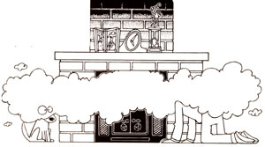
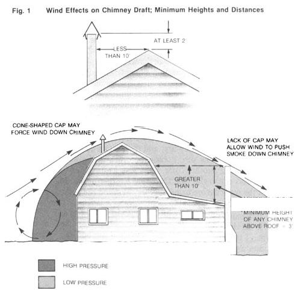

The venting system for a wood-burning heater is every bit as important as the stove itself.
Does your woodstove have the hiccups? Does your house smell of smoke much of the time? Do you have a heck of a time getting a fire started? If you have one (or even all) of these problems, don't blame the heater; your chimney is the most likely culprit.
There are actually two distinct (though related) factors affecting chimney performance: draft and capacity. Draft is the force behind flow, while capacity is the capability to handle flow. In most cases, more draft will equal more flow, but it's conceivable that you could have lots of draft but inadequate capacity if the diameter of your chimney is very small. The important thing to remember is that you'll get nowhere if you go after the wrong problem.
The object of this article is to help you diagnose and solve chimney problems related to airtight wood-burning heaters-without worrying too much about the physics of chimneys. (Open appliances, such as Franklin stoves and fireplaces, are separate matters.) Just pick out the SYMPTOMS you're suffering from on the list that follows, move on to the numbered PROBLEMS included with your symptom, and then proceed to the lettered SOLUTIONS mentioned with each problem.
Fire is reluctant to start, smoke spills into room at start-up: Some chimneys perform adequately only after the first 30 to 60 minutes of burning. See PROBLEMS 2, 5, 6, and 7.
Stove back puffs powerfully on windy days: If this is the only time you have chimney draft problems, see PROBLEM 8.
Smoke spills to some degree under all conditions: If there is periodic (or even consistent) smoke spillage under almost any burn condition, see PROBLEMS 1 through 7.
Smoke spills at larger damper openings: If you get smoke leaking into the room when you open the damper for greater heat output, see PROBLEMS 1 through 6.
Heat output is too low: If, in spite of a wide-open damper, the woodburner doesn't become very hot, see PROBLEMS 1, 2, 4, 5, and 6.
Smoke odors are persistent, even when stove isn't in use: If your house constantly smells of smoke, even when you haven't lit a fire, see PROBLEMS 6 and 8.
[1] Chimney too small: Unless you have a very large wood-burning heater, it's unlikely that your chimney has inadequate capacity. It's generally safe to size a chimney to the recommendations of the woodburner's manufacturer. If you don't have that information, be sure that, as a rule of thumb, the chimney is about the same diameter (or has about the same cross-sectional area) as the flue outlet on the appliance. See SOLUTIONS A, B, and E for marginal improvements or SOLUTION H for the real fix.
[2] Chimney too big: Chimneys should have no more than twice the cross-sectional area of the flue outlet on the appliance. Thus a stove with a six-inch-diameter collar shouldn't have more than an eight-inch-diameter chimney. Excess chimney area results in cooling of the flue gases and reduction of the draft, particularly in uninsulated exterior masonry chimneys. See SOLUTIONS F and H.
[3] Chimney too short: Draft is proportional to the square root of the height of the chimney, assuming that other factors don't interfere. Thus, doubling chimney height increases draft 41%. In practice, chimney height is more important in limiting the effects of wind patterns produced by the building and nearby obstacles than it is in producing draft by stack effect. The National Fire Protection Association's (NFPA) guidelines for chimney height (which are indicated in Fig. 1) should be considered minimums. See SOLUTION E.
[4] Chimney blocked: The primary causes of chimney blockage are creosote (in the chimney itself or in the spark screen of the cap), dampers that have come adrift, birds' nests, and fallen parts of masonry chimneys. See SOLUTIONS A, F, and H.
[5] Chimney has leaks: Any leak in the lower half of a chimney will reduce overall draft. In practice, joints in stovepipe connectors are not major sources of loss of draft. Look for other solid-fuel appliances connected to the same chimney, open cleanout doors, unplugged connectors for other stoves, or serious deterioration. See SOLUTIONS B, F, and H.
[6] House prevents adequate airflow up chimney: If your house is very small and well sealed, it may be too tight to allow adequate combustion airflow. (Most airtight stoves need between 10 and 50 cubic feet per minute.) More often, though, the lack of adequate airflow is caused either by other appliances (or fans) exhausting air from the building, or by stack effect: If your house has more openings for air leakage near its top than its bottom (this isn't usually the case but is more likely in multistory dwellings), and if the chimney has marginal draft to begin with because of excessive cooling (see PROBLEM 7), the natural flow may actually be downward in the chimney. See SOLUTIONS C and D.
[7] Flue gas temperature too low: Up to certain limits (which you're not likely to exceed), chimney draft increases as the difference in temperature between the gases in the chimney and the outside air increases. However, almost half-of the chimney's capacity is available with only a 35°F temperature difference, so you're not likely to encounter problems unless you have an exterior masonry chimney (which loses a lot of heat and cools the gases) and operate at low heat outputs. The new breed of highly efficient woodburners (see MOTHER N0. 95) is more likely to suffer from this problem, because it extracts so much heat from the gases before they enter the chimney. See SOLUTIONS F and H.
[8] Wind patterns reverse chimney flow: In most cases, wind increases chimney draft. If, however, a portion of the roofline upwind, another building, or a tree directs wind downward toward your chimney, back puffing could result. (See Fig. 1 for a diagrammatic description of wind effects and guidelines for proper chimney configuration.) Another possibility is that wind rising on an ascending roofline could be deflected down into the chimney by a chimney cap. See SOLUTIONS E and G.
[A] Clean the chimney: A heavy accumulation of creosote in a chimney can block the flue or drastically restrict its effective size. Even minor accumulations increase friction in the chimney and reduce its capacity. Plan to inspect your chimney once a month and clean it as needed.
[B] Seal leaks in the chimney: Be certain that there are no other appliances hooked to the stove's chimney; seal all other connectors to the chimney; close all cleanout doors and fittings. It's probably not necessary to go to the extreme of sealing stovepipe joints with furnace cement, though this might offer a marginal improvement.
[C] Open a window: If you suspect that, for one reason or another, your house is restricting or preventing flow up the chimney, crack a window open near the heater and see if the problem goes away. If so, consider installing an outdoor air supply as a more permanent remedy (see SOLUTION D).
[D] Install an outside combustion-air system: It's preferable to directly connect a woodburner's air inlet to the outside, rather than just putting a hole in the wall near the appliance. In practice, however, this may be difficult to do unless you use a heater designed for mobile home application (which will be equipped with outside air connections). Bear in mind that an outside air connection is unlikely to have any positive effect on efficiency: Even though room air isn't used, the stove must heat the air for combustion; what's more, the cool air will decrease the temperature of the stove's body, reducing radiation. Before you do anything drastic, try SOLUTION C.
[E] Extend the chimney: It's a simple matter to add another section to an insulated metal chimney, and it's not that difficult to add to masonry chimneys (flue tiles come in three-foot lengths). Be sure your chimney at least meets the NFPA guidelines shown in Fig. 1, though exceeding those dimensions may improve draft to some degree.
[F] Reline the chimney: Block or brick chimneys that are too large, unlined, located on the house's exterior, or deteriorating can be saved by placing a liner inside the existing masonry. Two basic methods were described in MOTHER NO. 83: an insulated stainless steel insert and a formed masonry (insulating refractory) liner. Metals other than high-grade stainless steel will deteriorate within a few years inside a chimney; also, any metal liner should be either spiral formed or installed so that it can expand and contract with temperature. If a chimney with a metal liner is very well sealed, it may not be absolutely necessary to fill the void between the liner and the masonry with vermiculite. Any quality relining job will be expensive (at least $20 per foot installed), but this is still less expensive than building or installing a new chimney.
[G] Install (or replace) a chimney cap: If you're having back puffing problems in windy weather, install a chimney cap or try a different one. Cone-shaped caps may encourage downward flow if the chimney is on the upwind side of the house. We don't recommend chimney caps that rotate with wind direction: If they don't become stuck with creosote, they spray creosote all over the roof when they pivot.
[H] Install a new chimney: If your existing chimney is falling apart or too small inside, and if it can't be successfully relined, we've got bad news: Building a new masonry chimney or installing an insulated metal one is expensive; carefully analyze the costs versus the savings of burning wood.
EDITOR'S NOTE: No one who burns wood or coal should be without a copy of Jay Shelton's Solid Fuel Encyclopedia, by J ay W. Shelton (Garden Way, $12.95)
|
 |
 |
|